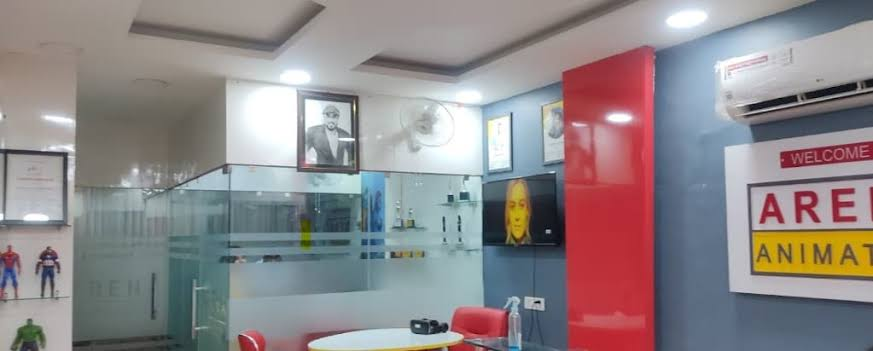

We are an animation institute dedicated to nurturing creativity, skills, and confidence. Through
hands-on learning and expert
mentorship, we help students turn their talent into real career
opportunities.
Arena Animation Dilshad Garden is a leading animation institute in Delhi, located near Dilshad Garden Metro Station. At Arena Animation dilshad Garden, we are passionate about transforming creativity into successful careers. Recognized as a leading animation institute in Delhi, we provide industry-oriented education in Animation, VFX, Gaming, Graphic Design, UX/UI and Digital Media—empowering students to excel in the ever-evolving creative industry. Our institute is built on the belief that true learning goes beyond software training. We focus on nurturing artistic skills, technical expertise, storytelling ability, and professional discipline. With a perfect blend of theory, practical exposure, and real-world projects, we prepare students to meet global industry standards with confidence.

In today's Digital Era, Animation & VFX is Trending career. Though a career in animation and graphics designing is relatively new as compared to other traditional careers, the scope of animation is in huge demand. If you have a particular curiosity and interest in developing moving images in 2-D or 3-D with an aim to impress, motivate, educate, or entertain people then a career in animation and graphic design is what you are looking for. However, for that, you require learning animation and graphic design in a proper manner. Life with us is very different from other Institutes. The center of Arena Animation (DILSHAD GARDEN & GTB NAGAR) are such places where you can learn multimedia from scratch. Arena Animation is an animation institute that provides you the opportunity to develop exquisite animation skills in accordance with the industry standards laying down a perfect career path in front of you with high employability levels. The beauty of our centers lies in the fact that the centers have got something for everybody. Whether you are looking for short-term courses to enhance your skills or full-fledged animation courses after 12th,